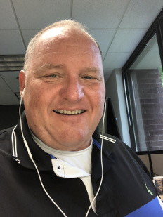

 Hello, my name is Robert Stuart. Let me introduce myself with some basic information. I consider myself easy going and very approachable. I enjoy meeting new people and talking and sharing with others. For me, success requires a clear set of objectives and a team atmosphere of open and honest communication.
I have been a Java programmer since 1999 having worked for less than a dozen companies working on projects encompassing health care, banking, transportation, government and supply chain management.
My first programming job was an internship with the State of Tennessee while pursuing my computer science associate degree. It was great fun and a respite from my jog, at the time, servicing fax machines in the field, covering middle Tennessee and southern Kentucky. The state also provided lots of paid software training opportunities and certifications. At the State, I knew very little HTML so the department Office for Information Resouces (OIR) put me in charge of their website very quickly. They sent me to a few training classes, and before long was able to create and layout pages they were pleased with.
I find the greatest satisfaction when delivering a working solution to the problem at hand. Whether it be a bug or improvement, identifying the root cause, determining how an issue breaks down into intermediate steps, and crafting a solution for each step has become second nature in my every day work patterns. Although the steps can be worked without assistance or outside input, I find it helpful to vocalize and work with others when working the issue's steps. Even having experienced an issue in the past, I find it rare the solution to be found in the same exact manner as the previous issue, especially if working with a different team member.